Engine: Application and ID
11 Engine identification

Engine number at the marked surface.
Replacement drives are already assigned a number containing the identification and engine number at the factory.
The old drive number must be imprinted for replacement crankcases.
Magnesium crank cases feature a label, the engine number does not need to be embossed.
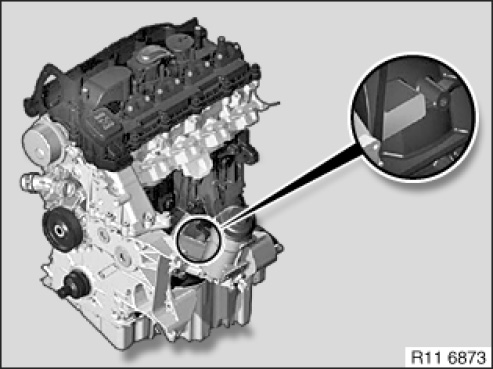
M47 / M47TU / M47T2
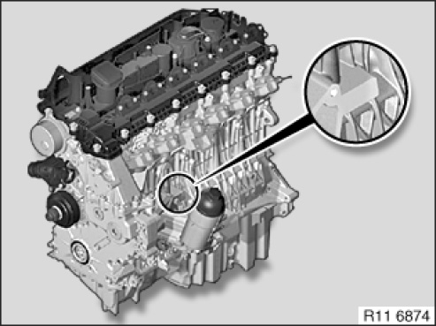
M57 / M57TU / M57T2
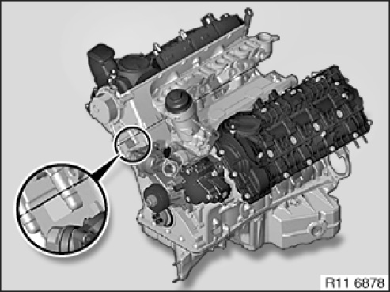
M67 / M67TU
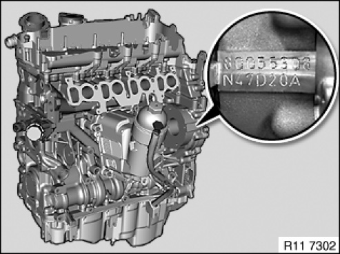
N47 / N47S / N47C / N47T / N57 / N57S / N57T
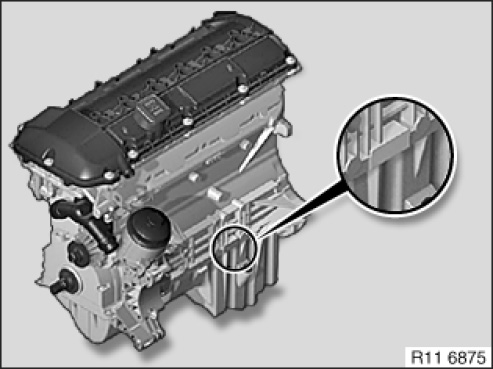
M52 / M52TU
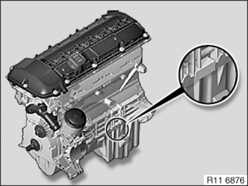
M54
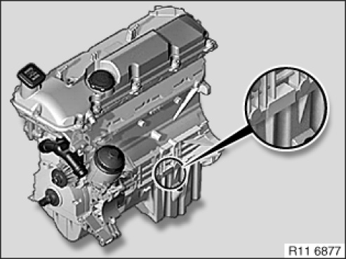
M56
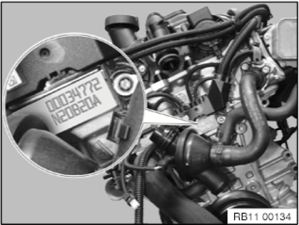
N20 / N26
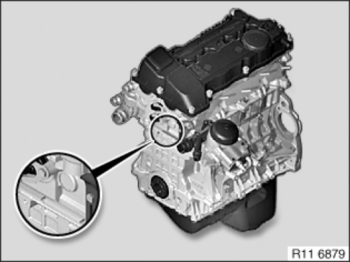
N40 / N45 / N45T / N43
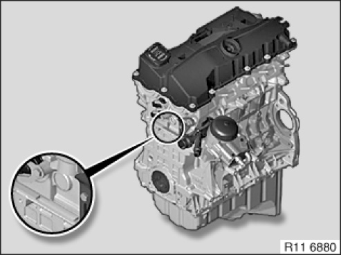
N42 / N46 / N46T
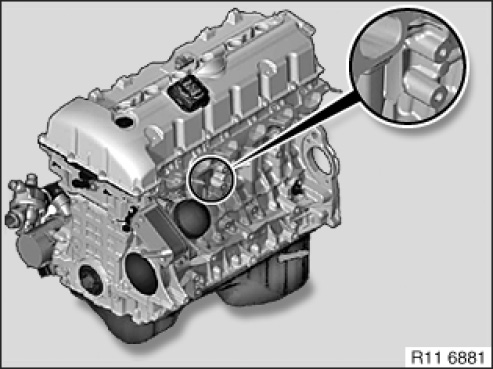
N51 / N52 / N52K / N52T / N53 / N54 / N55
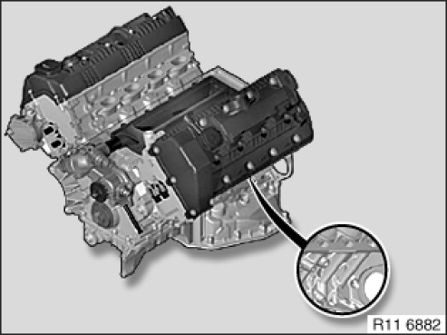
N62 / N62TU
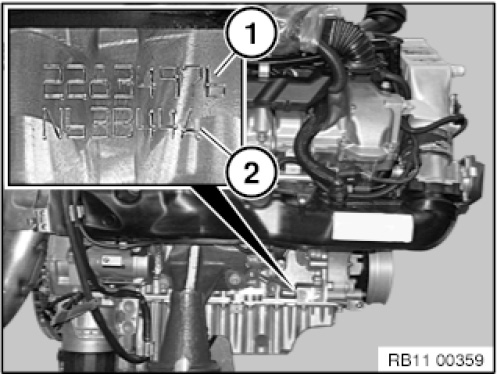
N63, N63TU.
S63, S63TU
N74
Position (1) engine number.
Position (2) engine code letters.
E72Vehicles must be imprinted on the left side.
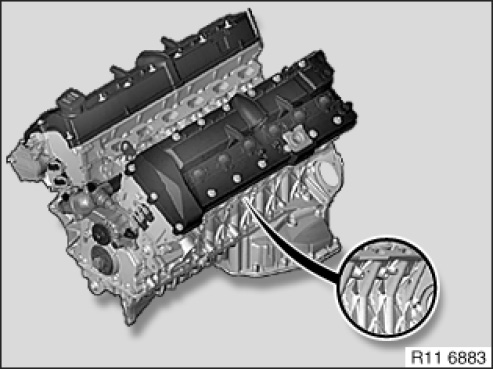
N73
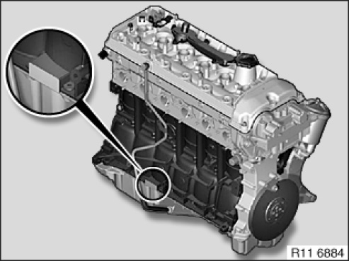
S54
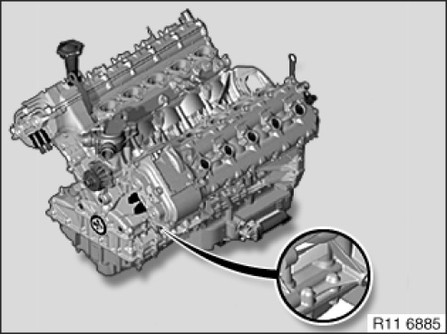
S85 / S65
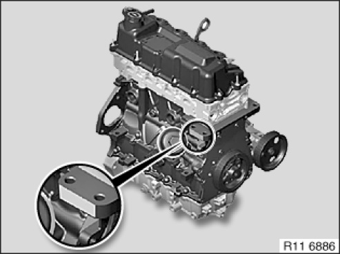
W10 / W11
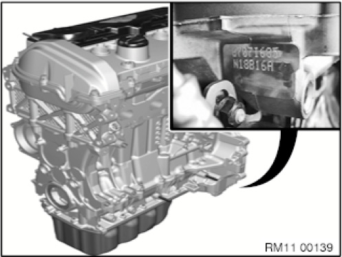
N12 / N13 / N14 / N16 / N18 / W16
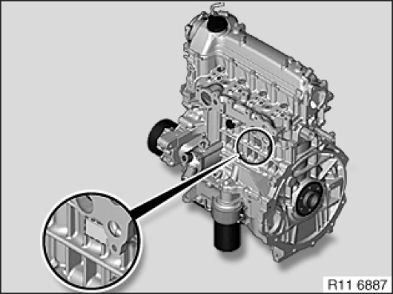
W17

Assemble engine.